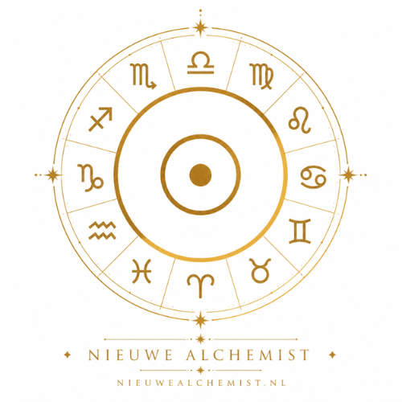

Nieuwe Alchemist
Ontdek jouw geboorte-energie
Vul je geboortedatum in en ontdek welke tarotenergie jouw levenspad kleurt. Je ontvangt jouw geboorte-energienummer én de kaart uit de Grote Arcana die bij jou hoort.
Jouw tarotgeboortekaart
✦ Jouw geboorte-energie
✦ Jouw kracht
✦ Jouw valkuil
✦ Wat deze kaart van jou vraagt
Dit is nog maar één laag van jouw blauwdruk
Jouw geboorte-energie laat het hoofdthema zien. In een persoonlijke Tarot Blauwdruk kijken we ook naar de onderliggende energie, jouw ontwikkelingspatronen, kwaliteiten en blokkades.
Ontdek jouw volledige persoonlijke blauwdruk →Persoonlijk uitgewerkt door Nieuwe Alchemist
Tarot is een symbolisch reflectiemiddel. Gebruik de uitkomst als uitnodiging tot zelfonderzoek, niet als vaststaand lot.